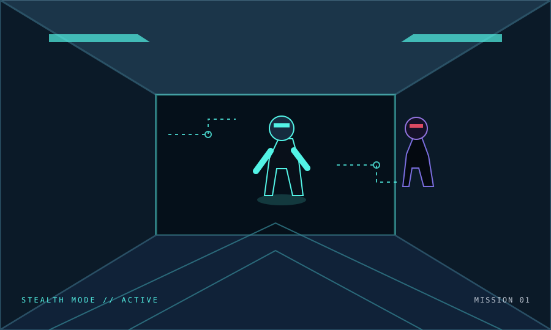
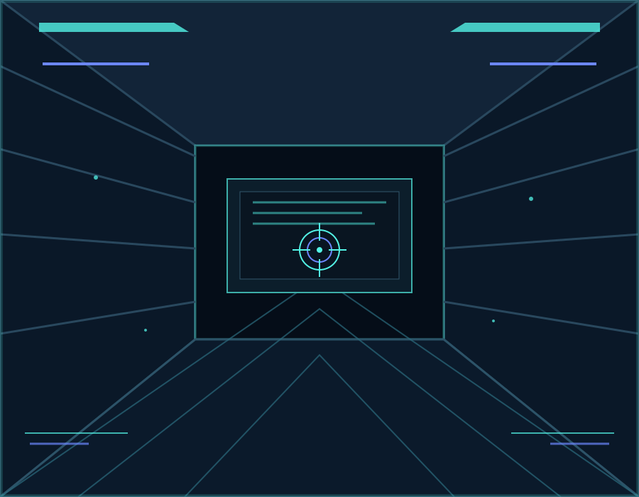
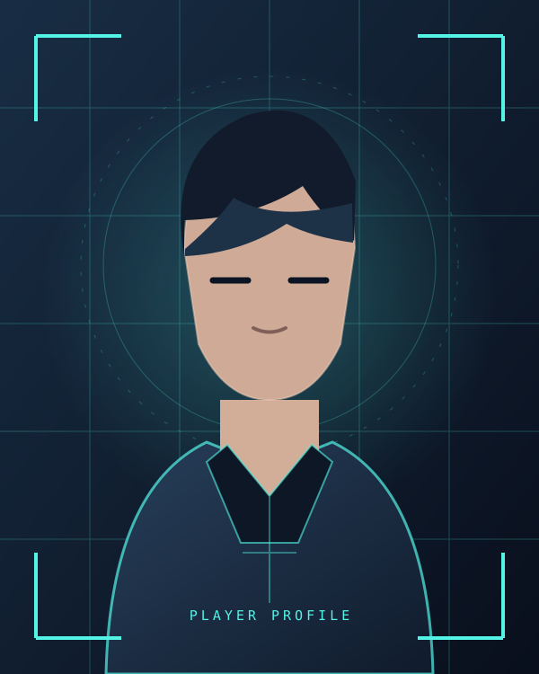
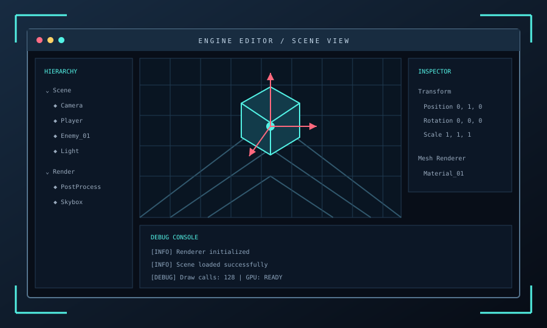
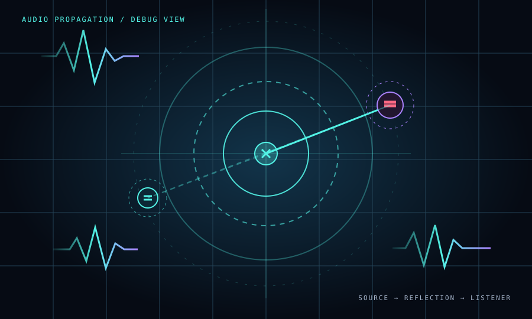

PROJECT_01STEALTH ESCAPE ステルス脱出ゲーム
敵の視覚・聴覚を避けながら、アイテムを集めて脱出を目指す3Dステルスゲーム。
GAME PROGRAMMER / PORTFOLIO
遊びの仕組みを考え、コードで世界をつくる。
ゲームプログラマーを目指して、ゲームエンジンやゲームシステムの開発に取り組んでいます。

01 — ABOUT ME

PLAYER PROFILE / 001安田 羚弥 RYO YASUDA
ASPIRING GAME PROGRAMMER
ゲームを遊ぶだけでなく、「どういう仕組みで動いているのか」を考え、実際に形にすることが好きです。
現在はC++を中心に、自作ゲームエンジンの開発や3Dゲームの制作に取り組んでいます。描画・ゲームロジック・敵AIなど、幅広い仕組みを自分で実装しながら、遊びやすさと技術の両方を磨いています。
02 — SELECTED PROJECTS
試作から実装・改善まで。
制作した作品や技術的な取り組みを紹介します。

PROJECT_01敵の視覚・聴覚を避けながら、アイテムを集めて脱出を目指す3Dステルスゲーム。

PROJECT_02描画・シーン管理・リソース管理など、ゲーム制作を支える基盤を開発。

PROJECT_03音の伝わり方を利用し、プレイヤーの行動音に敵が反応する仕組みを実装。
※ 作品名・説明・画像は仮の内容です。実際の作品情報に合わせて変更してください。
03 — LOADOUT
学習・制作を通して、実際に手を動かしながら身につけている技術です。
ゲームロジック / オブジェクト指向 / メモリ・リソース管理
レンダリングパイプライン / シェーダー / GPUリソース管理
頂点・ピクセルシェーダー / コンピュートシェーダー
モデル・アニメーションの調整 / GLBアセットの取り扱い
※ バーは自己評価の仮表示です。実際の習熟度に合わせて調整してください。
04 — NEXT TRANSMISSION
ご覧いただきありがとうございます。
ご連絡は下記のメールアドレスまでお願いいたします。